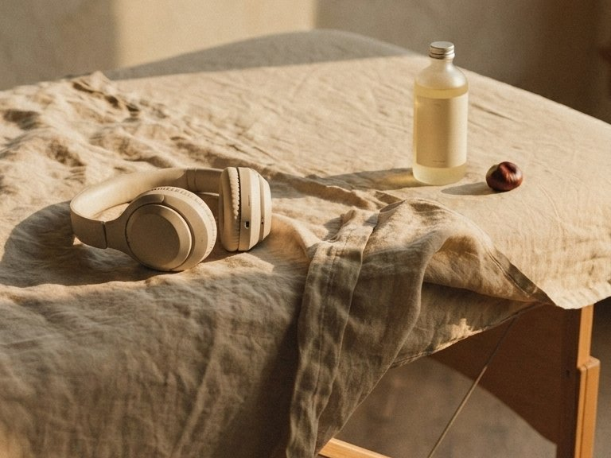
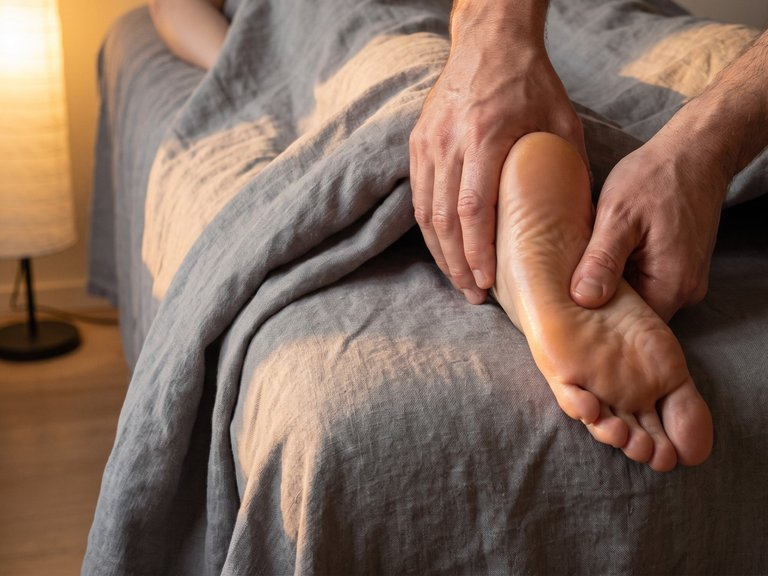
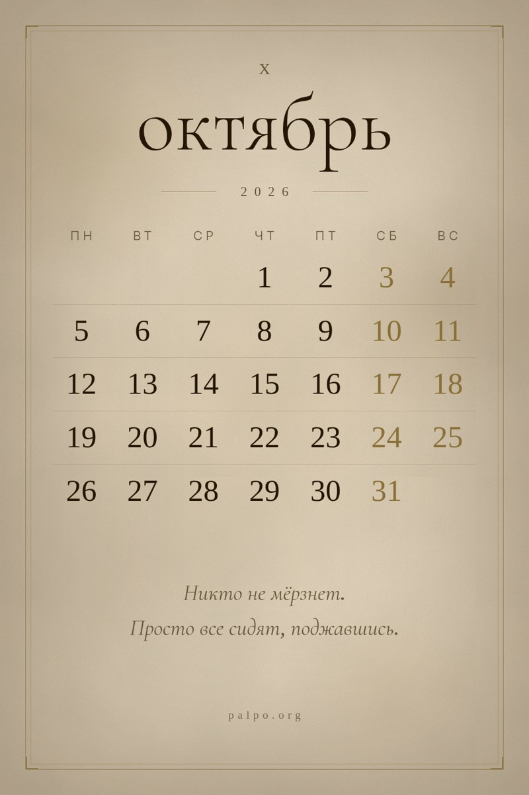

Массажист слышит рукамиПервое касание уже всё говорит
Если боль резкая, кружится голова или трудно дышать даже сидя — это к врачу, не сюда.
Что с телом
Если прямо сейчас телу тяжело — наблюдение от стола и одно движение к каждому состоянию.
 Затекла поясница на стуле
40 секунд · сидя
Что делать →
Затекла поясница на стуле
40 секунд · сидя
Что делать →
- Сядьте на край стула, стопы плотно в пол.
- Медленно качните таз вперёд — и отпустите назад. Движение мелкое, глазу почти не видно.
- Пять-шесть раз, без усилия. Спина сама найдёт, где отпустить.
Что я вижу у стола
Под пальцами квадратная мышца поясницы на ощупь как застывший сургуч. Она держит весь вес корпуса, пока вытянутые вперёд руки тянутся к клавиатуре. Ткань не спазмирована — она просто устала держать оборону в одиночку.
Если ночью будит и к утру хуже, чем было вечером — это к врачу. Наблюдение опирается на работу: Kett, 2021
 Плечи поднялись к ушам
40 секунд · сидя
Что делать →
Плечи поднялись к ушам
40 секунд · сидя
Что делать →
- Положите ладони на стол.
- На выдохе надавите ладонями вниз — и отпустите через четыре секунды.
- Плечи уйдут вниз сами. Три раза, между делами.
Что я вижу у стола
Человек ложится на стол, а плечи остаются у ушей — словно пиджак забыли снять с вешалки. Верхняя трапеция на ощупь как натянутый стальной трос: она часами спасает голову от падения в монитор и просто разучилась падать вниз сама.
Если опускание плеча отдаёт резкой стреляющей болью в пальцы руки или шею заклинило — это к врачу. Наблюдение опирается на работу: Szeto, 2005
 К вечеру ноги налились
60 секунд · сидя или стоя
Что делать →
К вечеру ноги налились
60 секунд · сидя или стоя
Что делать →
- Поджать пальцы стоп на пять секунд — и расслабить.
- Перенести вес на пятки, оторвав носки от пола.
- Натянуть носок сильно на себя. Десять перекатов.
Что я вижу у стола
Тело часто удерживает воду в тканях неделями, создавая ложное чувство лишнего веса. Когда жидкость уходит, ноги перестают ощущаться как свинцовые.
Если отёк только на одной ноге, сопровождается жаром или острой распирающей болью — это к врачу. Наблюдение опирается на работу: Ludbrook, 1966
 Лицо к утру тяжелеет
Минута · сидя
Что делать →
Лицо к утру тяжелеет
Минута · сидя
Что делать →
- Положите ладони крест-накрест так, чтобы подушечки пальцев легли в ямки над ключицами.
- Вдох носом. На длинном выдохе просто оставьте вес рук на ключицах. Пальцы не вдавливайте и не двигайте. Если в руке появилось онемение или покалывание, уберите ладони.
- Пять дыханий.
Что я вижу у стола
Когда просят сделать что-нибудь с лицом, я кладу руки не на лицо. Сначала на ключицы. Там, в ямках над костью, к вечеру плотно почти у всех: плечи весь день стояли чуть выше, чем нужно, и ямки закрылись.
Если отёк пришёл внезапно и держит половину лица, если на шее прощупываются плотные узлы, сидящие в коже — это к врачу. Отёк губ или горла с затруднением дыхания — это скорая, а не массаж.
 Кисть к вечеру перестаёт быть лёгкой
40 секунд · сидя
Что делать →
Кисть к вечеру перестаёт быть лёгкой
40 секунд · сидя
Что делать →
- Захватите большим и указательным пальцами другой руки мышечную подушку в развилке между большим и указательным.
- Медленно, без рывка, погрузите палец и держите ровное давление сорок секунд, дыша спокойно.
- Потом другая рука.
Что я вижу у стола
Я беру эту руку почти у каждого. Не потому что просили — просто когда человек лежит, рука оказывается рядом, и я её беру. И почти всегда там комок. Человек про него не знает: он пришёл с шеей.
Если онемение пальцев держится стойко, вещи выпадают из рук или пропала чувствительность к горячему и холодному — это к врачу.
 Жжёт точкой между лопаток
Минута · стоя у стены
Что делать →
Жжёт точкой между лопаток
Минута · стоя у стены
Что делать →
- Прижмите мяч к стене рядом с больным местом — примерно на ладонь в сторону, ближе к позвоночнику или выше.
- Ищите не боль, а отклик: точку, нажатие на которую отзывается в том самом знакомом месте.
- Найдя — не катайте. Оставьте на ней вес тела на тридцать-сорок секунд и спокойно дышите.
Если боль отдаёт током вниз по руке до пальцев, если не получается опустить подбородок к груди, если онемение не проходит после того, как отошли от стены — это к врачу.
 Кирпич под затылком к вечеру
Минута · сидя
Что делать →
Кирпич под затылком к вечеру
Минута · сидя
Что делать →
- Обопритесь спиной о спинку стула. Сцепите пальцы в замок и положите ладони под затылок: пусть голова лежит в них своим весом.
- Закройте глаза. На вдохе ведите взгляд под веками вверх, на длинном выдохе — вниз.
- Голова не двигается. Пять раз.
Так не надо: тянуть голову руками вниз, давить пальцами в затылок. Если вдруг опустилось одно веко, двоится в глазах, пропала часть того, что видите, или голова заболела внезапно и сильнее, чем когда-либо, — это скорая, не массаж. Отекает вокруг глаз — это к врачу. Больно — не делайте. Не подходит, если шея болит непонятно почему, если недавно была травма шеи или головы, если сцепить руки за головой больно плечам.

К пятнице сел голос
минута · сидя
Что делать →
- Губы сомкнуты, зубы разомкнуты, челюсть свободна.
- На длинном выдохе — тихое «м-м-м», секунд десять.
- Шесть раз. Плечи не поднимаются.
Что я вижу у стола
К концу недели у меня самого садится голос. На массаже я говорю мало, не кричу и не пою. Просто неделя разговоров.
Если голос сипит уже третью неделю и к утру не возвращается — это к врачу. Наблюдение опирается на работу: Cantarella, 2023

В комнате тепло, а пальцы ледяные
минута · сидя
Что делать →
- Медленно сожмите кулаки и одновременно подожмите пальцы ног.
- На выдохе раскройте широко. Десять раз.
- Потом покрутите стопами в одну и в другую сторону.
Что я вижу у стола
Человек ложится на массаж и говорит, что всё хорошо. А пальцы рук холодные, пальцы ног тоже, бывает — стопы целиком. Это очень частая картина.
Если пальцы белеют или синеют на холоде и долго не отходят — это к врачу. Наблюдение опирается на работу: Tagawa, 2025
 Ловлю себя на сжатых зубах
минута · сидя
Что делать →
Ловлю себя на сжатых зубах
минута · сидя
Что делать →
- Разомкните зубы. Кончик языка опустите за нижние зубы.
- Положите пальцы перед ушами. На выдохе отпустите челюсть вниз.
- Посидите так десять–двадцать секунд.
Что я вижу у стола
Сам я это вижу и иногда прошу отпустить — а разговора не выходит. Когда стою у стола и работаю — человек лежит расслабленный, ему хорошо, а у меня зубы сжаты.
Если челюсть щёлкает и рот открывается не до конца — это к стоматологу. Наблюдение опирается на работу: Bracci, 2018
 Ловлю себя на том, что не дышу
минута · сидя
Что делать →
Ловлю себя на том, что не дышу
минута · сидя
Что делать →
- Сидя, ничего не меняйте. Медленно выдохните до конца.
- Подождите, пока вдох придёт сам. Ничего не углубляйте.
- Потом просто перестаньте следить за тем, как вы дышите.
Что я вижу у стола
Полминуты, может, сорок секунд — вдох как будто застрял на середине и до конца так и не дошёл. Заметил я это случайно, а потом стал ловить у себя постоянно. За рулём в плотном потоке. Когда считаю деньги. Когда пишу что-то, что не даётся.
Так не надо: считать вдохи, дышать «правильно», задерживать дыхание. Если воздуха не хватает и без экрана, просто когда сидишь — это к врачу. Наблюдение опирается на работу: Schleifer, 2002
Не нашли своё — двадцать лет наблюдений в канале, поиском по слову

Календарь, в котором числа — часть картинки
Сделан под экран телефона. Сверху остаётся воздух под часы, снизу под док. Одна строка наблюдения, которую видно тридцать дней подряд.
{kind=link}
{kind=link}
{kind=link}
{kind=link}
Следующий месяц появляется здесь заранее.

Я работаю руками, а замечаю глазами. За двадцать лет у стола я увидел о теле и о людях больше, чем ожидал. Здесь я это называю — как есть, без учебников.
Новые состояния появляются каждую неделю. Первыми — в канале.
С чем реально работаю

«Держу этот бальзам в кабинете уже второй год. Использую перед плотной работой — на плечах, крестце, глубоких точках. Плотный, тянется за пальцем, не растекается. Хватает надолго. Работаю — доволен.»Читать полностью →

«Крем плотной текстуры — работаю им полтора часа подряд, не липнет, не улетает. После сеанса кожа как выдохнула.»Читать полностью →
Что ещё есть на сайте
Вопросы
Что здесь можно получить?
Своё состояние в разделе «Что с телом» ниже и одно движение на минуту к нему — сидя, там, где вы сейчас, ничего не покупая. Под каждым состоянием стоит строка о том, когда этого недостаточно и нужен врач.
Здесь дают советы по здоровью?
Нет. Алексей не врач и не претендует на это. Здесь — наблюдения от стола, не медицинские рекомендации. Если у вас что-то болит — это к врачу. Здесь другое: как тело ведёт себя, что оно говорит, когда его слушают руками.
Как давно вы этим занимаетесь?
В профессию пришёл в 40 лет. С 2006 года — ежедневно у стола. До десяти сеансов в день.
Сел голос к вечеру: что делать, если не кричал?
Губы сомкнуты, зубы разомкнуты, челюсть свободна. На длинном выдохе — тихое «м-м-м», секунд десять. Шесть раз. Плечи не поднимаются. Если голос сипит уже третью неделю и к утру не возвращается — это к врачу. Состояние на странице: «К пятнице сел голос».
Быстро устают ноги и гудят к вечеру: как облегчить?
Поджать пальцы стоп на пять секунд — и расслабить. Перенести вес на пятки, оторвав носки от пола. Натянуть носок сильно на себя. Десять перекатов. Если отёк только на одной ноге, сопровождается жаром или острой распирающей болью — это к врачу. Состояние на странице: «К вечеру ноги налились».
Мёрзнут пальцы рук и стопы в тёплой комнате: что предпринять?
Медленно сожмите кулаки и одновременно подожмите пальцы ног. На выдохе раскройте широко. Десять раз. Потом покрутите стопами в одну и в другую сторону. Если пальцы белеют или синеют на холоде и долго не отходят — это к врачу. Состояние на странице: «В комнате тепло, а пальцы ледяные».
Ноет между лопатками после сидения: что делать?
Прижмите мяч к стене рядом с больным местом — примерно на ладонь в сторону, ближе к позвоночнику или выше. Ищите не боль, а отклик: точку, нажатие на которую отзывается в том самом знакомом месте. Найдя — не катайте. Оставьте на ней вес тела на тридцать-сорок секунд и спокойно дышите. Если боль отдаёт током вниз по руке до пальцев, если не получается опустить подбородок к груди, если онемение не проходит после того, как отошли от стены — это к врачу. Состояние на странице: «Жжёт точкой между лопаток».
Как опустить плечи, если они сами поднимаются к ушам?
Положите ладони на стол. На выдохе надавите ладонями вниз — и отпустите через четыре секунды. Плечи уйдут вниз сами. Три раза, между делами. Если опускание плеча отдаёт резкой стреляющей болью в пальцы руки или шею заклинило — это к врачу. Состояние на странице: «Плечи поднялись к ушам».
Болит поясница от сидячей работы: как помочь спине на стуле?
Сядьте на край стула, стопы плотно в пол. Медленно качните таз вперёд — и отпустите назад. Движение мелкое, глазу почти не видно. Пять-шесть раз, без усилия. Спина сама найдёт, где отпустить. Если ночью будит и к утру хуже, чем было вечером — это к врачу. Состояние на странице: «Затекла поясница на стуле».
Болит рука от мышки: что сделать прямо за столом?
Захватите большим и указательным пальцами другой руки мышечную подушку в развилке между большим и указательным. Медленно, без рывка, погрузите палец и держите ровное давление сорок секунд, дыша спокойно. Потом другая рука. Если онемение пальцев держится стойко, вещи выпадают из рук или пропала чувствительность к горячему и холодному — это к врачу. Состояние на странице: «Кисть к вечеру перестаёт быть лёгкой».
Сжимаю зубы за компьютером: как расслабить челюсть?
Разомкните зубы. Кончик языка опустите за нижние зубы. Положите пальцы перед ушами. На выдохе отпустите челюсть вниз. Посидите так десять–двадцать секунд. Если челюсть щёлкает и рот открывается не до конца — это к стоматологу. Состояние на странице: «Ловлю себя на сжатых зубах».
Что такое «Чем работаю»?
Раздел про объекты, с которыми работает Алексей: масла, инструменты, текстиль. Не реклама — наблюдения про то, как конкретная вещь меняет работу. Алексей пишет только про то, что реально использует.
Зачем вы ведёте Pinterest?
Потому что это поиск, а не лента. Кто-то ищет «что такое зажим в плечах» или «как выглядит массажный кабинет в Минске» — и попадает сюда. Pinterest живёт медленно и долго. Пин, опубликованный год назад, работает сегодня.
Атмосфера
«Мне нравится момент между сеансами, когда кабинет пустой. Свет, масло, край стола. Всё на месте. И ничего не нужно.»
Читать полностью →